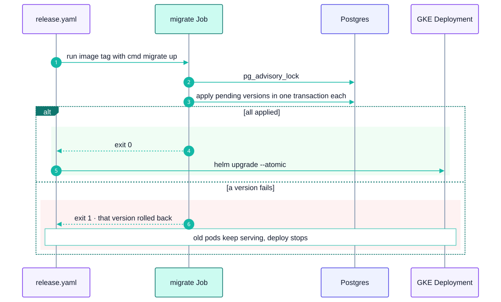
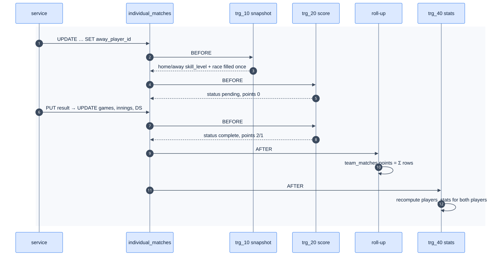
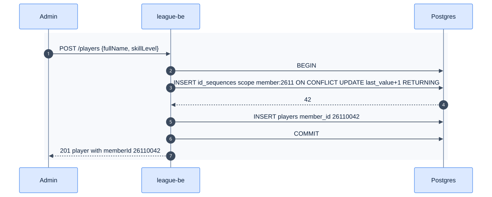

15 - League Data Foundation
Epic E02 · 6 features
Goal The league's data, rules and API exist in league-be, so every screen has something real to call
Phase 1 (F7–F10) · 2 (F38, F43)
Status Missing P0 blocker. Specified in league-fe plans/…/plan-1..3 as "done", but missing from league-be (27 )
Actors Backend engineers, Admin
Related 06 data model · 07 API · 10 backend · 04 rules
15.1 Features by phase15.1.1 Phase 115.1.2 Phase 215.2 Phase 1 deep dive15.2.1 Components
Only 00001_init.sql exists today. Everything red has to be restored or rebuilt, in that order. Open full screen 15.2.2 Restore order
Each step is a separate PR. Each must pass its own tests before the next one starts. Open full screen 15.3 Phase 2 deep diveScope: F38 Generated Member ID & Team ID and F43 Migration tool . Phase 1 trusts IDs typed in by the admin and runs SQL files by hand. Phase 2 has the database allocate IDs and makes schema change a versioned, CI-driven step of every release.
15.3.1 Components: what Phase 2 adds
Open full screen 15.3.2 Key flow: a release with a schema change
Open full screen 15.3.3 Data delta
Change
Why
id_counters (scope, next_value) + next_member_id() / next_team_id() with SELECT … FOR UPDATENo duplicate or skipped IDs under concurrency
players.member_id and teams.team_number default to the functionsThe admin UI stops asking for IDs
migrations/ renamed to NNNNN_name.sql with -- +goose Up/DownOrdered, reversible migrations
Rule: migrations are expand → migrate → contract, never breaking the running version
Zero-downtime deploys (F22)
15.4 F7 — Schema restore
Phase
Status
Rules
Repo refs
1
Missing R-011, R-036
league-be/db/migrations/00001_init.sql · spec: league-fe/plans/…/plan-1-database-foundation.md
15.4.1 Requirements
ID
Requirement
FR-7.1
Create team_rosters (team_id, player_id, left_at NULL, …). left_at IS NULL means "currently on the roster"
FR-7.2
Partial unique index: a player has at most one active roster (WHERE left_at IS NULL). Phase 2 changes this to one per division (Q32 , F39c)
FR-7.3
Partial index on team_rosters (team_id) WHERE left_at IS NULL for roster reads
FR-7.4
CHECK on team_matches.status IN ('scheduled','in_progress','submitted')
FR-7.5
CHECK on individual_matches.first_put_up IN ('home','away') (status already has a CHECK)
FR-7.6
Transfers are close-then-open : set left_at, insert a new row. Never UPDATE team_id
FR-7.7
Keep the TEXT users.id and every TEXT FK into users (matches auth.User.ID string)
15.4.2 Data
Open full screen 15.4.3 Edge cases
ID
Situation
Expected
EC-7.1
Inserting a second active roster row for one player
Unique violation → service returns 40001 with a clear message
EC-7.2
Player transferred mid-season
Old row gets left_at; played matches still reference the player via individual_matches
EC-7.3
Status typo 'Submitted'
Rejected by the CHECK
15.4.4 Acceptance criteria
AC-7.1 psql -v ON_ERROR_STOP=1 -f 00001… -f 00002… succeeds on an empty database.AC-7.2 A second active roster for the same player fails.
15.5 F8 — Postgres business rules
Phase
Status
Rules
Repo refs
1
Missing R-034/035/036, R-050, R-120, R-125, §5.3
spec: plan-2-database-rules-and-seed.md · mirror: league-fe/_parked/src/lib/rules.ts
15.5.1 Requirements
ID
Requirement
FR-8.1
fn_snapshot_put_up() BEFORE INSERT/UPDATE on individual_matches: when both players are set and home_skill_level IS NULL, copy both players.skill_level values and look up race_chart. Never overwrite
FR-8.2
fn_score_individual_match() BEFORE INSERT/UPDATE: derive status and points. Raise if games exceed a race or both players reached their race
FR-8.3
fn_roll_up_team_points() AFTER INSERT/UPDATE/DELETE: team_matches.home_points/away_points = Σ of the 5 rows
FR-8.4
fn_recompute_player_stats() (trigger trg_40_sync_player_stats): full recompute per affected player and division, not a delta
FR-8.5
put_up_block_reason(team_match_id, side, player_id) returns would_break_23 | already_put_up | not_on_roster | side_complete or NULL. can_put_up() is reason IS NULL
FR-8.6
change_skill_level(player_id, new_sl, reason, changed_by) validates, updates players.skill_level, inserts history, and returns the history id
FR-8.7
Views individual_match_sides, player_division_stats (zeros for unplayed players), team_standings (submitted nights only)
FR-8.8
Trigger names are numbered (trg_10_…, trg_20_…, trg_40_…) because Postgres fires same-event triggers in name order
FR-8.9
Functions read divisions.skill_level_cap, never a literal 23
15.5.2 Logic: points (fn_score_individual_match)
A match totals 3, 3 or 2 points (Q29 ). Open full screen 15.5.3 Logic: put-up block reasontext Copy put_up_block_reason(tm, side, player):
if player not in active team_rosters of tm.<side>_team → 'not_on_roster'
if player already in any individual_matches of tm (either side) → 'already_put_up'
if count(<side>_player_id set in tm) = 5 → 'side_complete'
used := Σ snapshot <side>_skill_level of tm rows (+ live SL of a put-up not yet snapshotted)
if used + player.skill_level > division.skill_level_cap → 'would_break_23'
return NULL
Phase 2 refinement (R-035): also block a pick that leaves the remaining slots impossible to fill within the cap. The MVP checks only the sum including this pick.
15.5.4 Logic: trigger chain
Open full screen 15.5.5 Edge cases
ID
Situation
Expected
EC-8.1
Admin changes SL 4 → 6 after match 2 was played
Match 2 keeps SL 4 and race; the next put-up uses 6
EC-8.2
Result corrected from 3–0 to 3–2
Points recomputed (3/0 → 2/1); roll-up and stats recomputed
EC-8.3
Row deleted by an admin
Roll-up and stats recompute (the AFTER DELETE path)
EC-8.4
change_skill_level with SL 9, a blank reason, or the same SLRaises; nothing changes
EC-8.5
Loser race 2, loser won 1
Hill → 2/1
15.5.6 Acceptance criteria
AC-8.1 3–0, winner race 3 → 3/0 complete. 4–3, both race 4 → 2/1. 4–1, loser race 3 → 2/0. 5–2, both race 5 → 2/0.AC-8.2 With 20 SL used and cap 23: SL 6 → would_break_23; SL 3 → NULL.AC-8.3 team_standings lists all teams at 0 until a night is submitted.
15.6 F9 — Seed and migrate/seed targets
Phase
Status
Repo refs
1
Missing the seed is brokenleague-be/db/migrations/seeds/20261106_seed.sql, Makefile
15.6.1 Requirements
ID
Requirement
FR-9.1
make migrate applies db/migrations/0000*_*.sql in order with psql -v ON_ERROR_STOP=1 against DATABASE_URL
FR-9.2
make seed applies the seed file. It's idempotent (ON CONFLICT DO NOTHING)
FR-9.3
The seed makes the 23 cap bind: 03209's top five = 29, 03211's = 27, and 03207 = 22 as the control
FR-9.4
Dev identities: admin@example.test (ADMIN) and captain@example.test (CAPTAIN, member 95007620). They can't log in; they exist only for role tests
FR-9.5
Two unpaid players exist, to exercise 40003
FR-9.6
Week-10 fixtures on 2026-11-10 19:30 +07: 03209 v 03214 and 03211 v 03207
15.6.2 Acceptance criteria
AC-9.1 On a fresh DB, make migrate && make seed succeeds, and running make seed twice changes nothing.
15.7 F10 — League API
Phase
Status
Repo refs
1
Missing spec: plan-3-league-api-endpoints.md · client: league-fe/src/api/leagueAPI.ts, src/types/league.ts
15.7.1 Requirements
ID
Requirement
FR-10.1
Implement the routes in 07 §2 under internal/league with the repo layering (handlers → services → repositories)
FR-10.2
Responses use {session_id, count, data, metadata}. Lists set count. Bodies are camelCase; query params are snake_case
FR-10.3
Writes re-check rules server-side (can_put_up) even if the UI already blocked the action
FR-10.4
New error codes 40003 UNPAID_MEMBER, 40004 PUT_UP_REJECTED, 40005–40007 (member link). Never renumber
FR-10.5
make swagger regenerates docs/swagger, and the FE types are generated from it (F24)
FR-10.6
An integration test runs every query against a seeded DB (LEAGUE_TEST_DATABASE_URL)
15.7.2 Endpoint map
Open full screen 15.7.3 Edge cases
ID
Situation
Expected
EC-10.1
Request body has an unknown field (e.g. snake_case match_order)
400 40001 (DecodeJSON rejects unknown fields)
EC-10.2
LIKE search for 100%Matched literally (input escaped)
EC-10.3
Two captains put up at the same time
One succeeds; the other gets 40004, and the FE refreshes the list
15.7.4 Acceptance criteria
AC-10.1 Swagger lists 18 paths.AC-10.2 The integration test passes all plan-3 assertions.
15.8 F38 — Generated Member ID and Team ID
15.8.1 Requirements
ID
Requirement
FR-38.1
On player creation, generate member_id = YYMM + 4-digit sequence for that month (e.g. 26110042). Admins can no longer type IDs
FR-38.2
On team creation, generate team_number = RR (region) + VV (venue code) + T (0–9) only if the business confirms region + venue numbering. Otherwise keep the APA-style admin input
FR-38.3
A venue code holds up to 10 teams. When full, a new venue code is allocated
FR-38.4
Sequences are gap-free and safe under concurrency: id_sequences(scope, last_value) updated with UPDATE … RETURNING in the same transaction
FR-38.5
Existing IDs are never changed
15.8.2 Logic
Open full screen 15.8.3 Edge cases
EC-38.1 The 10,000th registration in one month fails clearly (capacity 9,999).EC-38.2 A rolled-back transaction leaves no gap, because the sequence row is updated in the same transaction.
15.9 F43 — Migration tool
15.9.1 Requirements
ID
Requirement
FR-43.1
Adopt golang-migrate or goose. Rename the files to the tool's convention and record the current version in schema_migrations
FR-43.2
Every migration has a down script, or is marked irreversible with the reason
FR-43.3
Migrations run as a Kubernetes Job before the rollout (F22). The deploy fails if a migration fails
FR-43.4
Expand/contract: a release contains only backward-compatible changes; destructive changes ship one release later
FR-43.5
CI applies all migrations to an empty Postgres and runs the rule tests (F8)
15.9.2 Flow
Open full screen